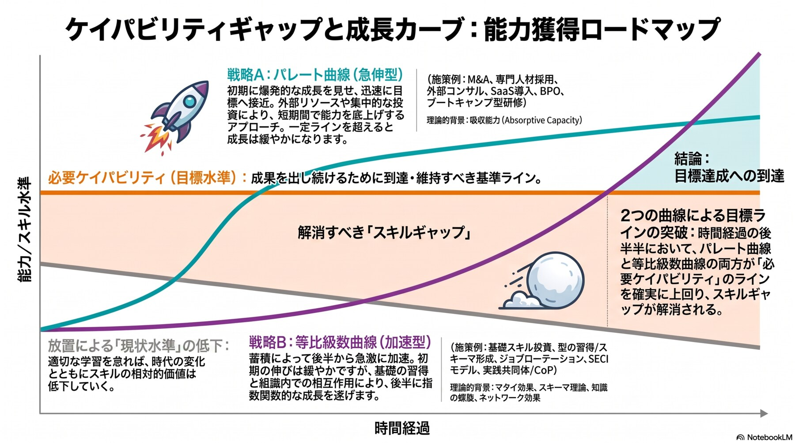
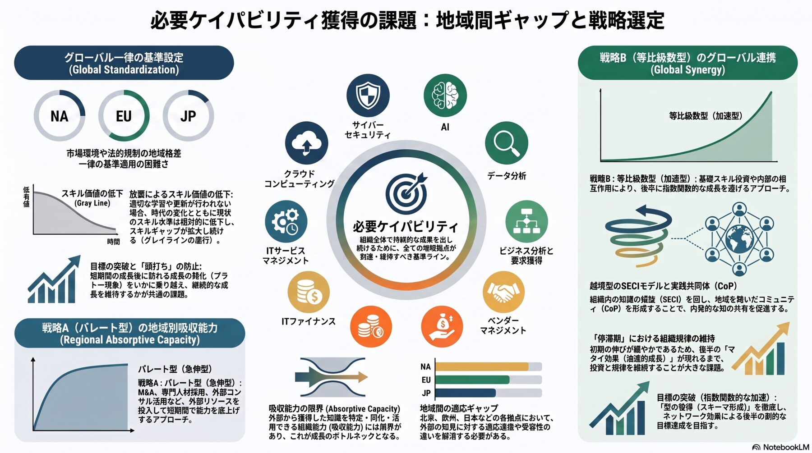

各章へ直接移動できます。★ はその部の要点。Jump straight to any chapter. ★ marks the key point of each part.
| 読者Reader | 入口Where to start |
|---|---|
| 決裁者Decision-makers | 5章 BはAの前提条件 → 10章 依存関係 → 44章 決めるべきことCh. 5 B is A's precondition → Ch. 10 Dependencies → Ch. 44 What must be decided |
| 測定を設計する人Designing the measurement | 第III部・第IV部 を通読Read Part III and Part IV in full |
| 組織を設計する人Designing the organisation | 第V部 構造Part V — Structure |
| 現場マネジャーLine managers | 38章 今日から着手できる3点Ch. 38 — three things to start today |
| ツールを検討中の人Evaluating tools | 40章 唯一の規則。ただし帯Bが未了なら選定は早いCh. 40 — the single rule. But if Band B is unfinished, selection is premature |